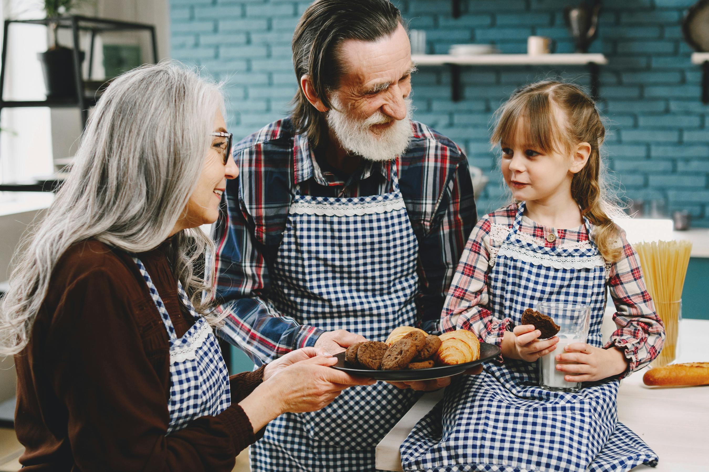
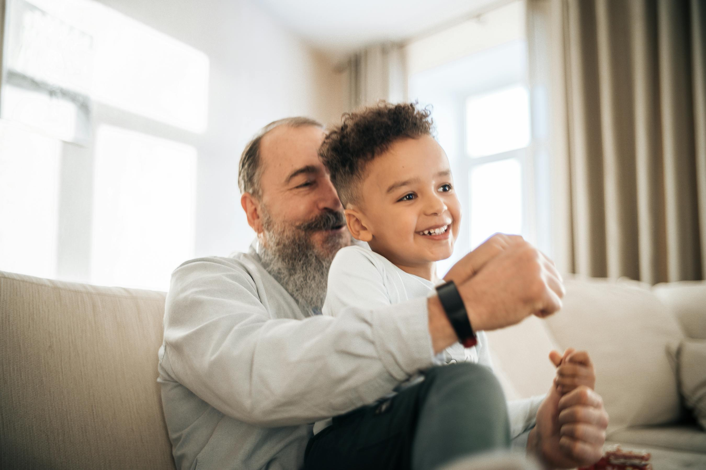
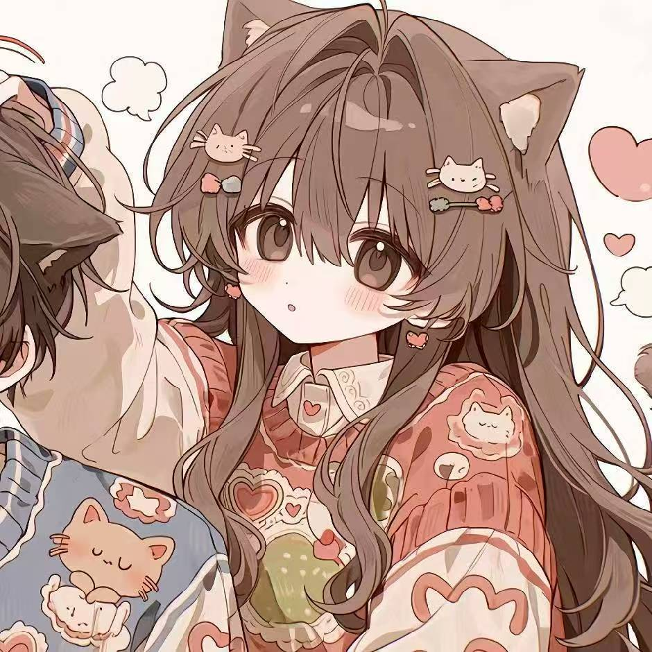
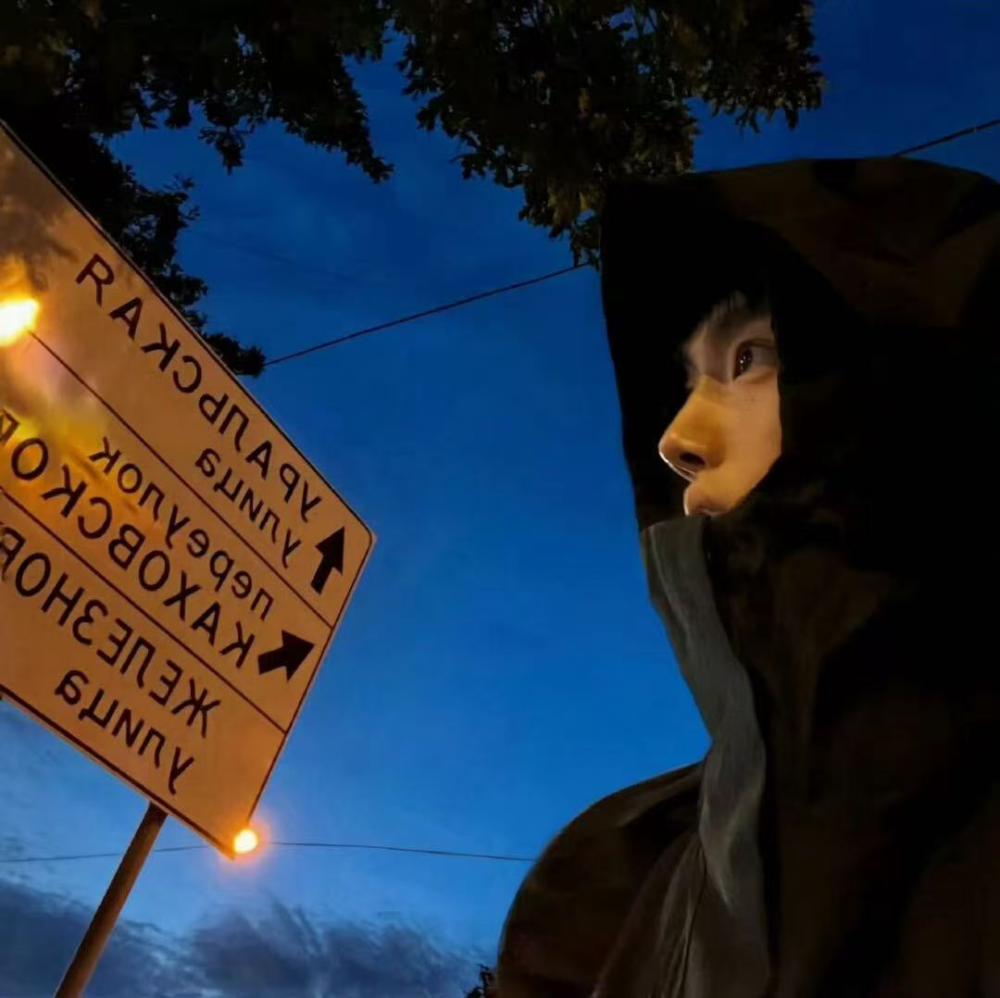

Problem
Stories fade after one conversation
Family memories attached to physical keepsakes are rarely preserved in a format younger users revisit.

Intergenerational Story Scene
A playful intergenerational memory portal
From keepsake to conversation
CPT208 - Relation Between Generations | Group B4-1
Choose whether you enter as grandparent or grandchild.
Use NFC on supported devices, or use manual scan fallback.
Unlock the memory card and 3D visual scene.
Continue the story through short cross-generation messages.
Track unlocked keepsakes in the map and return later.
Key moments from the interaction journey

Eye contact and close body language support trust before digital interaction starts.
The trigger can be any meaningful family item: watch, photo, recipe notebook, letter, or toy.
Warm domestic activities create the right emotional context for preserving family stories.
Open the interactive product prototype directly from GitHub Pages
Official names, IDs, and responsibilities


Questionnaire design, 24-sample dataset, and statistical insights.
Crazy 8s, alternatives, rationale, and iterative decisions.
Architecture, screenshots, prototype entry, and implementation notes.
Full semester workflow from brainstorming to final submissions.